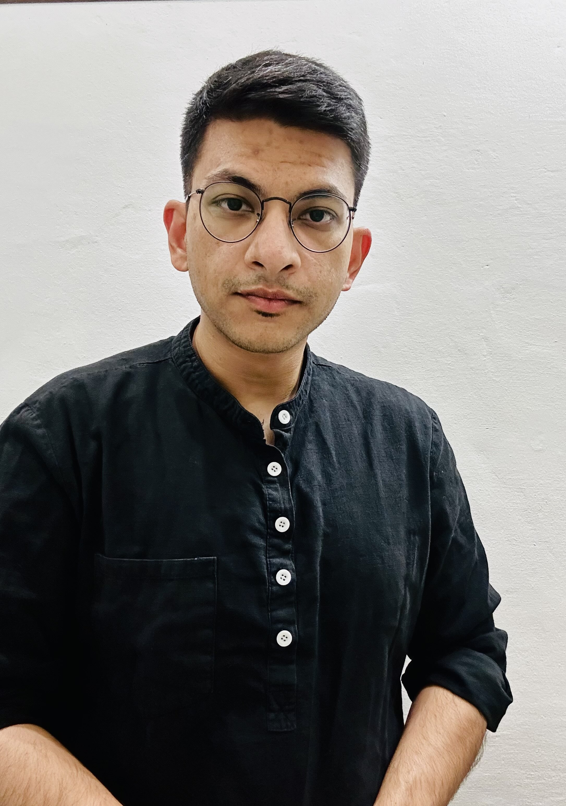
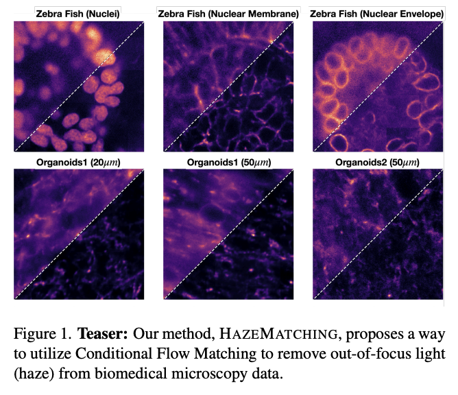
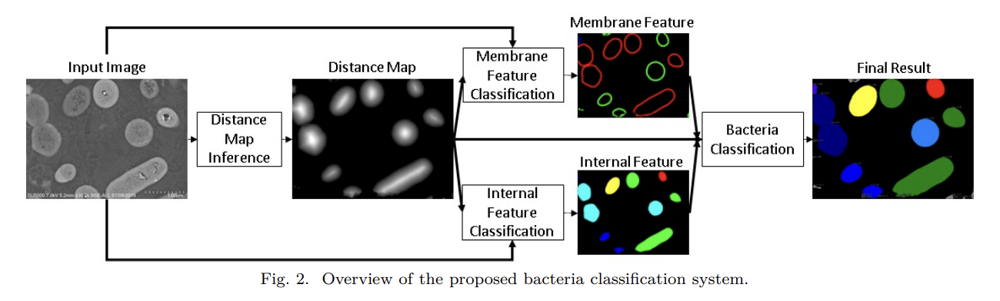

Anirban Ray PhD Student in Computational Image Restoration | Generative AI for Microscopy
📅 Book a meeting No agenda needed 😊
About Me
I am a final year PhD Student in Computer Science at Technische Universität Dresden & Human Technopole, Italy, advised by Dr. Florian Jug. My research focuses on developing flow-matching models to restore biological imaging, advancing the intersection of artificial intelligence and the life sciences. I am passionate about AI4Science and deeply interested in how science philanthropy can accelerate discovery and innovation.
I hold a Masters degree in Computer Vision and Deep Learning from Nagoya Institute of Technology, Japan (2018), where I was advised by Professor Jun Sato and co-advised by Associate Professor Fumihiko Sakaue. Before beginning my doctoral journey, I worked as an Associate AI researcher at Hitachi Research in Tokyo, applying deep learning to visual understanding and bioimage analysis.
I earned my Bachelors in Computer Science in Chennai, India, and was born and raised in Kolkata, India, where I completed my Secondary and Higher Secondary education.
Education
PhD in Computer Science | 2022 – Present Technische Universität Dresden & Human Technopole, Italy
Master of Engineering in Computer Science | 2016 – 2018 Nagoya Institute of Technology
Advisor: Prof. Jun Sato and Prof. Fumihiko Sakaue | Thesis
Bachelor of Tech. in Computer Science and Engineering | 2011 – 2015 Vel Tech Rangarajan Dr. Sagunthala R&D Institute of Science and Technology
Teaching Experience
Teaching Assistant – DL4MIA | 2022, 2023, 2024
Human Technopole, Milan, Italy
Supported the Deep Learning for Microscopy Image Analysis (DL4MIA) course across three consecutive editions. Responsibilities included mentoring participants, invited lecture, coding sessions, and guiding project work on AI-based microscopy restoration and segmentation.
Teaching Assistant – DL@MBL | 2023, 2024Marine Biological Laboratory, Woods Hole, USA
Contributed to hands-on sessions on deep learning for biological imaging. Provided mentoring and technical guidance to participants during lab exercises and research projects. One of the project started there ended up being published in NeurIPS 2024.
Work Experience
Associate Researcher | Apr 2018 – Jan 2022 Hitachi Ltd., Tokyo, Japan
Applied Deep Learning and Computer Vision for image analysis in the R&D Group’s Center for Technology Innovation.
Engineering Intern (AR Applications) | Sep 2016 Sun Corporation, Konan, Japan
Developed augmented reality applications for AceReal smart glasses using Unity and Vuforia frameworks.
Engineering Intern (Cloud Services) | Aug 2014 – Jan 2015 Machine Pulse (Mahindra Teqo), Mumbai, India
Analyzed large-scale database migration strategies for renewable energy and logistics cloud systems.
Special Achievements
Selected Participant – Optical Microscopy & Imaging in the Biomedical Sciences (OMIBS) | 2023 Marine Biological Laboratory, USA
Selected for this prestigious advanced microscopy course at the Marine Biological Laboratory, covering cutting-edge optical imaging techniques in biomedical sciences.
Invited Contributor – Alumni Voice Column | 2018 The University of Tokyo
Invited by the Government of Japan and the University of Tokyo to share academic and professional experiences as part of Japan’s international education initiative.
Selected Participant – International Computer Vision Summer School (ICVSS) | 2017 ICVSS, Italy
Chosen among 150 top global students (mostly PhDs) for advanced training and research presentation in computer vision.
Aichi Monozukuri Scholarship | 2015 Aichi Prefectural Government, Japan
Awarded full funding for Master’s studies at Nagoya Institute of Technology. Selected among the top 10 students in Asia.
Selected Participant – Undergraduate Summer School on Computer Science | 2013 Indian Institute of Science, Bengaluru India
Chosen among 60 top students from India for advanced topics and research presentation in computer science.
Skills
Computational Skills
Python, PyTorch, OpenCV, NumPy, LaTeX, Git, SLURM, Bash, Linux
Spoken Languages
Bengali (Native), Hindi (Fluent), English (Fluent), Japanese (Conversational), Italian (Elementary)
Research
Current Research
HazeMatching: Conditional Flow Matching for Microscopy Dehazing

A generative framework that restores optical microscopy images degraded by scattering and haze using Conditional Flow Matching (CFM). HazeMatching models the mapping between widefield and confocal modalities, enabling clearer visualization of biological structures.
GitHub | Paper (arXiv) | Demo
Past Research
Deep Learning for Industrial and Microscopy Image Analysis (2018–2021)
From 2018 to 2021, my research at Hitachi Ltd., Tokyo focused on developing deep learning–based systems for high-precision image understanding in both industrial inspection and biomedical microscopy. I worked on combining computer vision and AI-driven automation for identifying and quantifying objects of interest in complex visual data.
In 2021, I co-authored the paper Quantitative Analysis System for Bacterial Cells in SEM Images Using Deep Learning (CISS 2021), introducing a neural architecture for accurate segmentation and counting of bacterial cells from scanning electron microscopy (SEM) data. This was followed by Deep Learning Based Bacteria Classification from SEM Images Using a Combination of Membrane and Internal Features (CISS 2022), where we improved bacterial classification by jointly modeling morphological and internal structural cues.
Building on this foundation, I co-invented several patented AI image-processing systems that enable adaptive feature extraction and object detection for microscopy and industrial imaging. These include US Patent 12,327,363, US Patent 12,211,213, and EP Patent 3961562A1, describing methods and apparatuses for generating neural models that identify and segment objects of interest from images.
This phase of my work established a foundation in AI-driven visual understanding, bridging industrial automation with quantitative biological imaging, and set the stage for my later research in generative and flow-based models for microscopy restoration.
